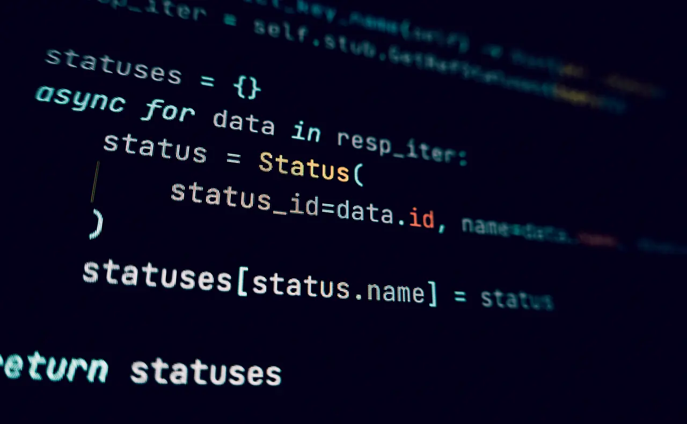

Website
Làm website bằng WordPress hay code tay? So sánh công bằng để chọn đúng
Hỏi mười đơn vị làm web, bạn sẽ nghe mười ý kiến, thường nghiêng về thứ họ đang bán. Bài này so sánh WordPress và website lập trình riêng theo từng tiêu chí doanh nghiệp quan tâm, kể cả những điểm bất lợi của cách Dream Labs đang làm.

Nên làm website bằng WordPress hay code tay tùy vào ba điều: ngân sách, tính năng cần có và ai sẽ duy trì website sau khi bàn giao. WordPress hợp khi bạn cần làm nhanh với chi phí vừa phải, muốn dùng nhiều tính năng có sẵn qua plugin và có người cập nhật đều đặn. Website lập trình riêng hợp khi bạn cần thiết kế khác biệt, tốc độ cao, tính năng đặc thù và muốn ít phải lo vá lỗi plugin, đổi lại mỗi thay đổi lớn cần đến lập trình viên.
Để bạn đọc có cơ sở đánh giá: Dream Labs làm website chủ yếu bằng Next.js kèm hệ quản trị nội dung, tức thuộc nhóm "code tay". Vì vậy bài này cố gắng nêu cả điểm mạnh của WordPress và điểm yếu của cách chúng tôi làm, để bạn tự quyết định.
WordPress và "code tay" thực chất là gì
WordPress
WordPress là phần mềm quản lý nội dung mã nguồn mở, miễn phí, phát hành theo giấy phép GPL. Bạn tải về, cài lên hosting, chọn giao diện (theme) và cài thêm plugin để có tính năng: form liên hệ, SEO, bán hàng với WooCommerce, đa ngôn ngữ… Cần phân biệt WordPress tự cài (wordpress.org) với dịch vụ WordPress.com do một công ty vận hành, có giới hạn theo gói.
Trên thị trường Việt Nam, website WordPress có nhiều mức: cài theme mua sẵn và thay nội dung, tùy biến theme bằng công cụ kéo thả (page builder), hoặc lập trình theme riêng trên nền WordPress. Ba mức này khác nhau rất nhiều về chất lượng và giá.
Code tay
"Code tay" là cách gọi website được lập trình riêng. Ngày nay ít ai viết từ con số 0; lập trình viên dùng framework như Next.js, Laravel và kết nối một hệ quản trị nội dung để chủ website tự sửa chữ, ảnh, đăng bài. Điểm khác WordPress là giao diện và tính năng được viết cho đúng website đó, không cài thêm hàng chục plugin của bên thứ ba.
Bảng so sánh WordPress và code tay
Bảng dưới so sánh ở mức điển hình. Một website WordPress được lập trình kỹ có thể nhanh và an toàn hơn một website code tay làm ẩu, nên hãy xem đây là xu hướng chung, không phải quy luật.
| Tiêu chí | WordPress | Code tay |
|---|---|---|
| Chi phí ban đầu | Thấp đến vừa, nhất là khi dùng theme có sẵn | Vừa đến cao, vì thiết kế và lập trình riêng |
| Thời gian làm | Nhanh với theme có sẵn | Lâu hơn, tùy độ phức tạp |
| Thiết kế khác biệt | Bị giới hạn bởi theme, trừ khi lập trình theme riêng | Tự do theo thiết kế |
| Tốc độ tải trang | Phụ thuộc theme, plugin và hosting; dễ nặng dần | Dễ tối ưu vì chỉ có mã cần thiết |
| Bảo mật và cập nhật | Cần cập nhật lõi, theme, plugin thường xuyên | Ít điểm yếu phổ biến, vẫn cần cập nhật thư viện |
| Tự sửa nội dung | Rất thuận tiện, nhiều người đã quen | Được, nếu có hệ quản trị nội dung đi kèm |
| Thêm tính năng | Nhanh nhờ plugin có sẵn | Cần lập trình, linh hoạt hơn cho tính năng đặc thù |
| Tìm người sửa | Dễ, nhiều người biết WordPress | Cần người biết đúng công nghệ đã dùng |
| Chi phí lâu dài | Gia hạn plugin trả phí, bảo trì định kỳ | Ít bảo trì định kỳ, nhưng sửa lớn tốn công lập trình |
Bảo mật và cập nhật plugin
Đây là khác biệt lớn nhất trong vận hành hằng ngày. Lõi WordPress được cộng đồng lớn duy trì và vá lỗi thường xuyên. Rủi ro chủ yếu đến từ theme và plugin của bên thứ ba: plugin ngừng được cập nhật, plugin có lỗ hổng chưa vá, hoặc theme "bẻ khóa" tải từ nguồn không chính thức có cài sẵn mã độc. Vì WordPress phổ biến, các công cụ dò lỗ hổng tự động cũng nhắm vào nó nhiều.
Điều đó không có nghĩa WordPress không an toàn. Website WordPress được giữ an toàn nếu: cài ít plugin, chỉ dùng plugin còn được cập nhật, cập nhật đều đặn, sao lưu định kỳ và làm theo hướng dẫn tăng cường bảo mật của WordPress. Vấn đề là ở nhiều doanh nghiệp nhỏ, sau khi bàn giao không ai làm những việc này.
Website code tay không có kho plugin chung để kẻ xấu dò theo một mẫu, và nếu được dựng thành trang tĩnh thì gần như không có trang đăng nhập hay cơ sở dữ liệu lộ ra ngoài. Tuy vậy, nó vẫn dùng các thư viện mã nguồn mở cần cập nhật, và độ an toàn phụ thuộc trực tiếp vào tay nghề người lập trình.
Tốc độ và SEO
Google dùng các chỉ số trải nghiệm trang như Core Web Vitals khi đánh giá website, và khách trên điện thoại rời đi nếu trang tải chậm. WordPress có thể đạt tốc độ tốt khi theme gọn, ít plugin, có bộ nhớ đệm và hosting phù hợp. Website dựng bằng công cụ kéo thả nặng, cài nhiều plugin thường chậm dần theo thời gian.
Website lập trình riêng chỉ tải đúng mã cần thiết, nên dễ đạt điểm cao hơn khi đo bằng PageSpeed Insights. Tuy nhiên tốc độ chỉ là một phần của SEO; nội dung, cấu trúc và liên kết quan trọng không kém. Xem checklist đầy đủ trong bài thiết kế website chuẩn SEO.
Chi phí lâu dài: đừng chỉ nhìn giá làm web
So sánh chi phí nên tính cho ba năm, không chỉ giá làm ban đầu. Với WordPress, các khoản lặp lại thường là hosting đủ mạnh cho WordPress, gia hạn theme và plugin trả phí, công cập nhật và xử lý lỗi khi plugin xung đột sau cập nhật. Với website code tay, khoản lặp lại thường thấp hơn (hosting cho trang tĩnh, ít bảo trì định kỳ), nhưng khi muốn thêm trang kiểu mới hoặc tính năng mới, bạn trả công lập trình.
Nói gọn: WordPress rẻ lúc đầu và tốn đều đặn; code tay tốn lúc đầu và tốn theo từng lần nâng cấp. Website ít thay đổi cấu trúc nhưng cần ổn định lâu dài thường có lợi với code tay. Website thay đổi tính năng liên tục, cần thử nhiều thứ nhanh thường có lợi với WordPress. Chi tiết từng khoản duy trì có trong bài chi phí duy trì website hằng năm.
Quyền sở hữu: rủi ro thật nằm ở đâu
Nhiều người nghĩ WordPress "của mình" còn code tay "phụ thuộc người làm". Thực tế rủi ro sở hữu nằm ở hợp đồng và bàn giao, không nằm ở công nghệ:
- WordPress là mã nguồn mở, ai cũng tiếp quản được, miễn là bạn có tài khoản quản trị cao nhất, quyền truy cập hosting và bản quyền các plugin trả phí đứng tên bạn.
- Code tay bạn sở hữu đầy đủ nếu được bàn giao mã nguồn, tài khoản hosting, tên miền và tài liệu. Rủi ro là các đơn vị dùng hệ thống quản trị đóng của riêng họ, không giao mã nguồn, khiến bạn không thể chuyển đi nơi khác.
- Nền tảng thuê bao (trình tạo website trả phí theo tháng) tiện nhưng bạn chỉ thuê; ngừng trả phí là website dừng và khó mang dữ liệu đi.
Dù chọn cách nào, hãy yêu cầu ghi trong hợp đồng: bàn giao mã nguồn, tài khoản quản trị cao nhất, tên miền và hosting đứng tên doanh nghiệp.
Khi nào chọn WordPress, khi nào chọn code tay
Nên chọn WordPress khi
- Ngân sách hạn chế, cần lên website nhanh.
- Website chủ yếu là tin tức, blog, đăng bài hằng ngày bởi nhiều người.
- Cần nhiều tính năng phổ biến có sẵn: đặt lịch, thành viên, bán hàng cơ bản.
- Có người nội bộ hoặc đơn vị bảo trì cập nhật đều đặn.
Nên chọn code tay khi
- Thương hiệu cần thiết kế riêng, chuyển động, trải nghiệm khác đối thủ.
- Tốc độ trên điện thoại và điểm Core Web Vitals là ưu tiên.
- Có tính năng đặc thù: tính giá theo cấu hình, kết nối CRM, phần mềm nội bộ.
- Không có người theo dõi cập nhật plugin hằng tháng và muốn website ít bảo trì.
Ví dụ minh họa
Các tình huống giả định, không phải khách hàng thật. Một trung tâm tiếng Anh ở Hà Nội có năm giáo viên cùng đăng bài, lịch khai giảng thay đổi mỗi tuần: WordPress với theme gọn và vài plugin chọn lọc là hợp lý. Một thương hiệu nước hoa thủ công ở TP.HCM bán sản phẩm giá cao, cần trang sản phẩm đẹp, tải nhanh để chạy quảng cáo: website lập trình riêng giúp thể hiện thương hiệu và giữ tốc độ. Một xưởng in có công cụ tính giá theo số lượng, chất liệu, kích thước: tính năng đặc thù này lập trình riêng thường gọn hơn ghép nhiều plugin.

Sai lầm thường gặp khi chọn nền tảng
- Chọn theo lời "WordPress dễ bị hack" hoặc "code tay mới chuyên nghiệp". Chất lượng phụ thuộc người làm và người duy trì, không chỉ công nghệ.
- Dùng theme, plugin bẻ khóa để tiết kiệm. Đây là đường ngắn nhất dẫn tới mã độc và mất dữ liệu.
- Cài plugin cho mọi nhu cầu nhỏ. Mỗi plugin thêm vào là thêm một thứ cần cập nhật và một nguy cơ xung đột.
- Nhận website code tay không có trang quản trị. Mỗi lần đổi số điện thoại cũng phải nhờ lập trình viên.
- Không hỏi ai sẽ bảo trì sau bàn giao. Câu hỏi này quan trọng hơn câu hỏi dùng công nghệ gì.
- Không nhận mã nguồn và tài khoản cao nhất. Khi đổi đơn vị, bạn phải làm lại từ đầu.
Chi phí làm website lập trình riêng tại Dream Labs
Dream Labs làm website bằng Next.js kèm trang quản trị để bạn tự sửa nội dung và đăng bài, bàn giao mã nguồn và tài khoản, tên miền và hosting đứng tên doanh nghiệp. Gói Cơ bản 8.000.000đ dựng trên mẫu tinh chỉnh; gói Chuyên nghiệp 18.000.000đ thiết kế riêng 100%, có trang quản trị, blog và mục tiêu tốc độ Lighthouse từ 90; gói Cao cấp Liên hệ thêm đa ngôn ngữ, thanh toán, CRM.
| Gói | Giá | Thời gian | Bao gồm |
|---|---|---|---|
| Cơ bản | 8.000.000đ | 7–10 ngày4 vòng sửa | Có mặt chuyên nghiệp trên Google và điện thoại trong khoảng 10 ngày, khách tìm thấy và liên hệ được ngay.
|
| Chuyên nghiệpPhổ biến nhất | 18.000.000đ | 14–21 ngày9 vòng sửa | Website riêng đúng tầm thương hiệu, tự đăng bài để có khách từ Google lâu dài, không phụ thuộc người làm.
|
| Cao cấp | Liên hệ | 30–45 ngàyKhông giới hạn trong phạm vi | Trải nghiệm đủ khác biệt để định vị cao cấp, bán hàng và tiếp khách trực tuyến, phục vụ cả khách nước ngoài.
|
Nếu nhu cầu của bạn hợp với WordPress hơn, chúng tôi sẽ nói thẳng. Xem thêm trang thiết kế website, website bán hàng và bảng giá. Muốn biết website mất bao lâu để hoàn thành, đọc bài thiết kế website mất bao lâu, hoặc nhắn Zalo 0934 246 420 để được tư vấn.
Câu hỏi thường gặp
WordPress có miễn phí không?
Phần mềm WordPress tự cài là miễn phí và mã nguồn mở. Bạn vẫn trả tiền tên miền, hosting và có thể trả thêm cho theme, plugin trả phí hoặc công thiết kế, bảo trì.
Website WordPress có dễ bị hack không?
Rủi ro chủ yếu đến từ plugin, theme lỗi thời hoặc bẻ khóa và mật khẩu yếu. Website WordPress được cập nhật đều, ít plugin, có sao lưu thì an toàn ở mức tốt cho doanh nghiệp nhỏ.
Website code tay có tự sửa nội dung được không?
Được, nếu website có hệ quản trị nội dung đi kèm. Hãy hỏi rõ trước khi làm: phần nào tự sửa được, phần nào phải nhờ lập trình viên.
Website code tay có chuẩn SEO hơn WordPress không?
Không tự động hơn. Code tay dễ tối ưu tốc độ và cấu trúc, nhưng WordPress làm kỹ cũng đạt chuẩn SEO tốt. Nội dung hữu ích vẫn là yếu tố quyết định.
Đang dùng WordPress có nên chuyển sang code tay không?
Chỉ nên chuyển khi website hiện tại chậm, khó bảo trì hoặc không đáp ứng được thiết kế, tính năng bạn cần. Khi chuyển, phải giữ đường dẫn cũ hoặc chuyển hướng đúng để không mất thứ hạng.
Làm website bằng WordPress hay code tay rẻ hơn về lâu dài?
WordPress thường rẻ lúc đầu nhưng có chi phí cập nhật, plugin đều đặn; code tay tốn hơn lúc đầu, ít bảo trì định kỳ nhưng mỗi nâng cấp lớn cần công lập trình. Hãy tính tổng chi phí trong ba năm theo nhu cầu thay đổi của bạn.
Nguồn ảnh: ảnh bìa: Nemuel Sereti / Pexels · ảnh 1: Masud Gaanwala / Pexels · ảnh 2: Stanislav Kondratiev / Pexels. Ảnh dùng theo giấy phép miễn phí của Pexels, chỉ mang tính minh họa.
Bắt đầu cùng Dream Labs
Chưa biết website của bạn hợp với cách nào?
Nhắn Zalo cho Dream Labs mục tiêu website, người sẽ cập nhật nội dung và các tính năng cần có. Chúng tôi tư vấn thẳng cách phù hợp, kể cả khi đó không phải dịch vụ của chúng tôi.